Battery Energy Storage Systems have become indispensable for grid stability and renewable energy integration worldwide, but their deployment in extreme cold-climate environments presents unique technical, economic, and operational challenges. The Himalayan region spanning India, Nepal, and Bhutan, alongside the Nordic countries of Finland, Sweden, and Denmark, represent two of the most demanding climates for BESS deployment. Understanding how to optimize battery storage for these regions is critical for achieving ambitious renewable energy targets and ensuring energy resilience in vulnerable mountain communities.
The Cold-Climate Challenge: Why Himalayan and Nordic BESS Differs
Conventional lithium-ion batteries struggle dramatically in cold weather. At temperatures below -20°C, the electrolyte viscosity increases sharply, hindering lithium-ion migration and causing internal resistance to soar. At -40°C, standard lithium-ion batteries may retain only 10-20% of their nominal capacity, rendering them essentially non-functional for grid-scale applications. The physics becomes even more complex at high altitudes—above 2,500 meters, lower air pressure creates challenges for conventional cooling systems and can cause battery cells to swell dangerously, posing explosion risks if not properly engineered.
The Nordic challenge differs slightly in that these regions experience sustained subzero temperatures coupled with extreme weather events like heavy snowfall and storms, while the Himalayan context adds altitude-related complications combined with seasonal monsoon flooding risks.
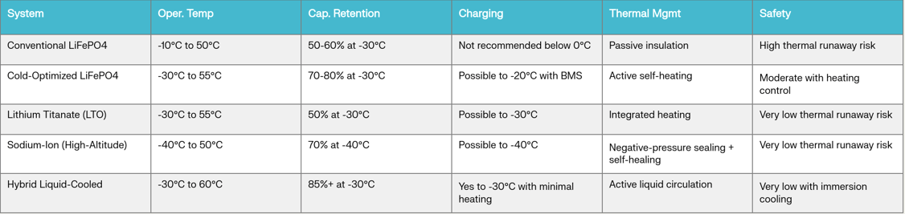
Advanced Battery Chemistries for Cold-Climate Deployment
The industry has responded to these challenges with several proprietary battery solutions specifically engineered for extreme cold:
Lithium Titanate (LTO) Batteries represent one of the earliest successful cold-weather solutions. LTO batteries can operate at temperatures as low as -30°C while retaining approximately 50% of their capacity and maintaining significantly lower thermal runaway risk compared to conventional lithium-ion cells. However, their lower energy density makes them less economical for large-scale grid applications.
Self-Heating Lithium Systems have emerged as a breakthrough technology. These incorporate integrated heating elements or pulse-current heating mechanisms that warm the battery pack from its internal temperature before allowing charging operations. For example, CATL's all-weather battery supports -30°C startup with 80% capacity restoration after preheating, while RELIION's LT Series and VANVOLT batteries operate reliably down to -30°C with automatic heating modules activated at 5°C.
Sodium-ion Batteries for Extreme Altitudes represent the cutting edge of cold-climate BESS technology. Highstar Sodium has deployed sodium-ion systems at 5,000-meter altitudes in the Himalayan region operating at -20°C, with design innovations including proprietary low-temperature electrolytes that remain fluid at -60°C and negative-pressure cell sealing to prevent swelling at altitude. These systems can maintain 70% capacity at -40°C and support charging down to -40°C—capabilities far exceeding conventional lithium solutions.
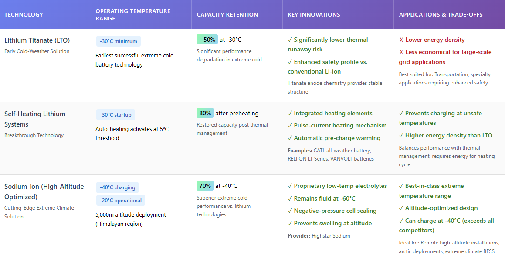
Thermal Management: The Cornerstone of Cold-Climate BESS Success
Effective thermal management is not merely an operational feature but a fundamental design imperative for cold-climate BESS. Poor thermal management has directly contributed to multiple large-scale BESS fire incidents globally, particularly when systems are deployed in challenging climates where temperature swings stress the thermal control architecture
Air-Cooled vs. Liquid-Cooled Systems: In Nordic regions with sustained low ambient temperatures, the choice between air-cooled and liquid-cooled BESS carries significant implications. Traditional air-cooled systems like Huawei's ESS 1.0 use forced convection to dissipate heat but suffer from uneven thermal gradients across cells, reduce energy density due to spacing requirements, and require substantial auxiliary heating in winter months—reducing round-trip efficiency to approximately 85.5%.
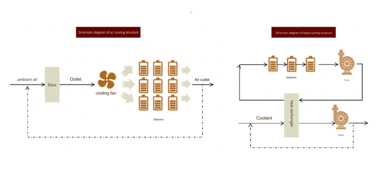
Liquid-cooled systems, exemplified by Huawei's ESS 2.0, maintain thermal uniformity across battery modules (typically < 3°C variation) through closed-loop fluid circulation directly to heat-exchange plates. These systems achieve up to 90.3% round-trip efficiency at similar discharge rates and can operate down to -30°C with minimal auxiliary heating losses. The superior thermal control extends operational life by 10-30% compared to air-cooled alternatives under comparable use cases.
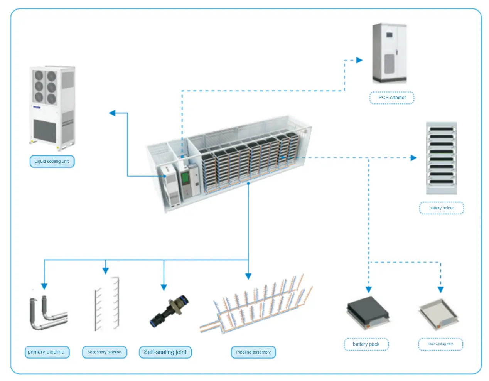
Insulation and Passive Thermal Strategies: Both high-altitude Himalayan deployments and Nordic installations require robust insulation. Industry standard specifications call for 10 mm of insulation material using XPS foam or aerogel to maintain battery temperatures within optimal ranges. This passive insulation layer prevents freezing damage, maintains energy output, and crucially slows heat propagation if thermal runaway occurs, providing critical response time for safety systems.
Arctic-grade BESS solutions deployed by Poweroad at China's Karamay Oilfield (-40°C operation) combine integrated liquid cooling and heating systems to achieve zero capacity loss below -30°C and instant ramp-up from standby during grid outages.
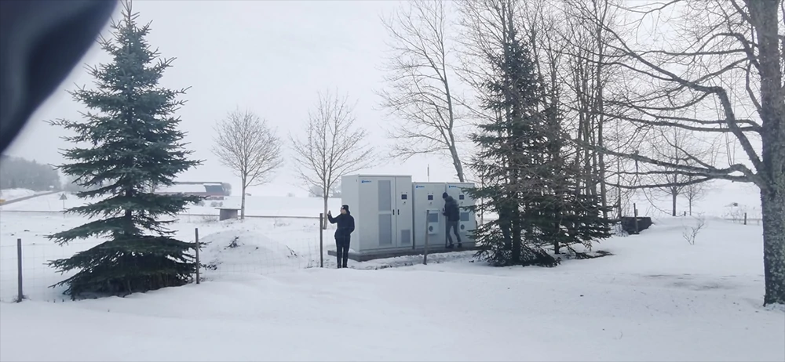
Altitude-Specific Design Innovations
High-altitude deployment introduces engineering requirements absent in lowland regions. At altitudes above 2,500 meters, the physics of battery operation fundamentally changes.
Pressure Compensation Technology: Lower atmospheric pressure at high altitude creates significant internal-external pressure differentials that can cause battery cells to expand and potentially rupture. Highstar Sodium's negative-pressure laser welding technique pre-establishes a lower-pressure environment inside battery cells during manufacturing, effectively balancing pressure differential and eliminating swelling hazards. This represents a critical innovation for Himalayan BESS deployments at 4,000+ meter elevations.
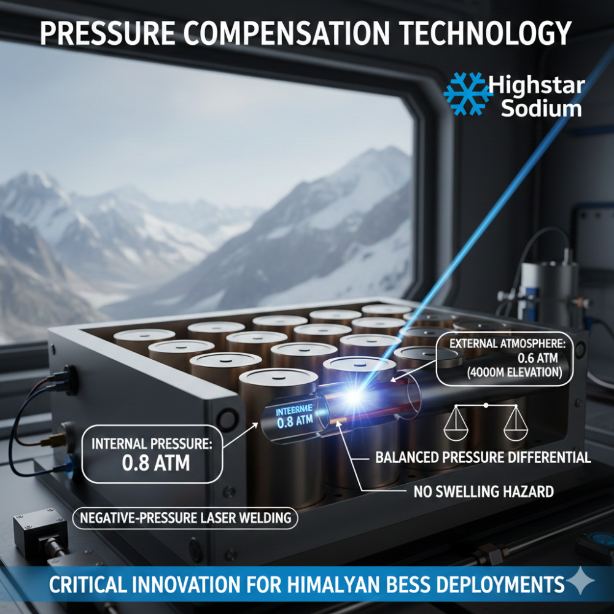
Enhanced Cooling Efficiency: Lower air density at altitude degrades conventional air-cooling performance. Liquid-cooled systems overcome this limitation through direct thermal transfer independent of ambient air density, making them the preferred architecture for high-altitude installations. Combined with self-heating mechanisms, liquid-cooled systems maintain performance across the full altitude range while minimizing energy parasitic losses.
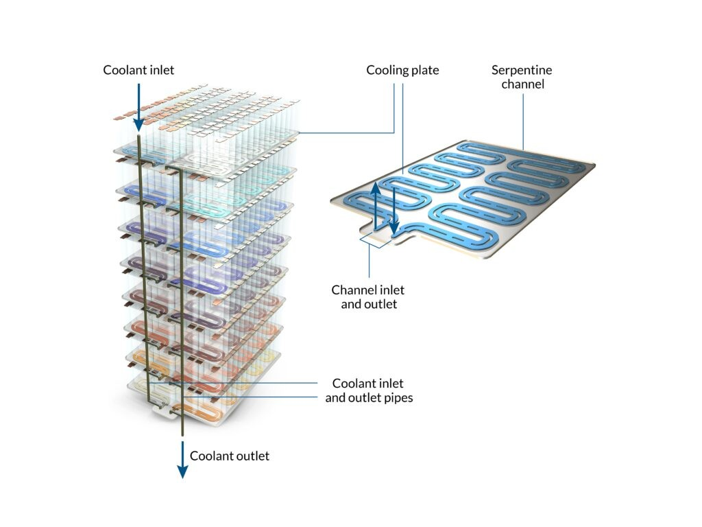
Self-Healing Conductive Networks: Sodium-ion battery chemistry specifically developed for high-altitude deployment includes self-healing conductive network technology that actively maintains and repairs ionic and electronic pathways during each charge-discharge cycle. This capability dramatically extends cycle life and maintains performance degradation at rates significantly lower than conventional batteries facing similar altitude stressors.
Safety and Compliance: Preventing Thermal Runaway in Harsh Climates
Thermal runaway remains the most critical safety concern for BESS in any climate, but cold-climate regions introduce additional risk dimensions. Traditional fire suppression approaches like water-based or chemical agents require a fire to ignite before activation. By contrast, advanced thermal management systems prevent ignition entirely.
Immersion cooling technology, such as EticaAG's LiquidShield system, submerges battery cells in fire-resistant dielectric fluid, ensuring uniform temperature distribution and eliminating localized hotspots where thermal runaway initiates. This approach provides several safety advantages: temperatures remain stable even under high discharge rates, electrical short circuits are prevented through the dielectric medium's insulating properties, and early fire detection algorithms enable predictive intervention.
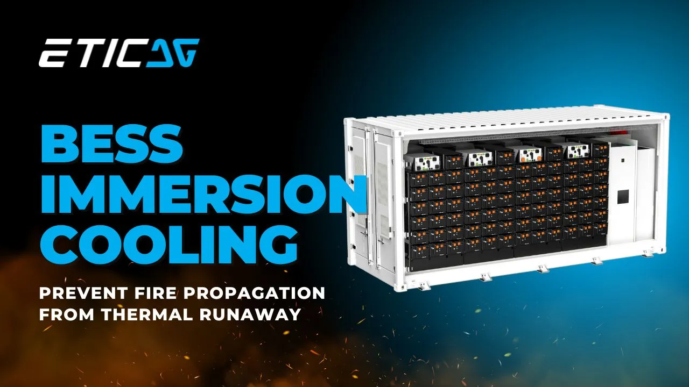
Compliance frameworks for cold-climate BESS deployments include UL 9540A (standard for energy storage systems), IEC 62933 (electrochemical energy storage systems), and India's BIS standards for domestic projects. Real-time thermal monitoring with automated early-detection systems is now mandatory for grid-scale installations in both Nordic and Himalayan contexts.
Regional Case Studies: Proven Cold-Climate Deployments
Nordic Success: Swedish Frequency Regulation: Northern Sweden's rapid wind power expansion created frequency instability requiring enhanced primary frequency response capabilities. A containerized BESS deployment commissioned December 1, 2024, was specifically selected for its exceptional cold-weather performance, proven resilience in temperatures below -25°C, and rapid frequency response times. The system achieved immediate operational success in Q1 2025, demonstrating that properly engineered BESS can reliably provide grid-critical services even in extreme Nordic winters.
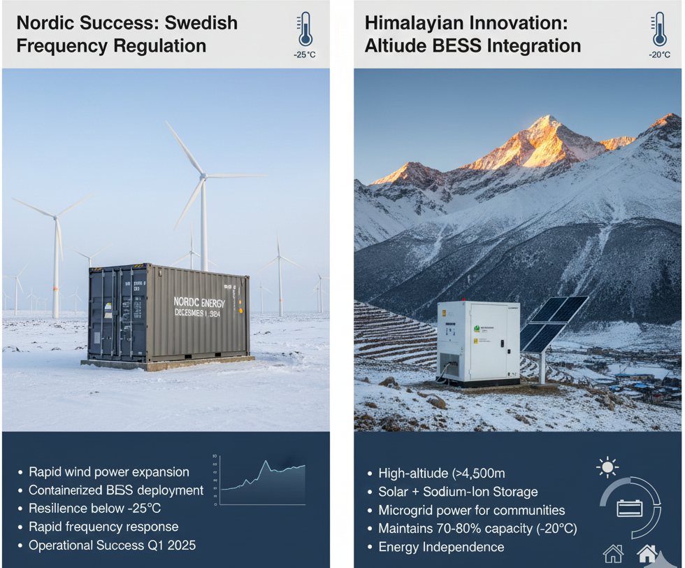
Himalayan Innovation: Altitude BESS Integration: Some companies have pioneered high-altitude BESS deployments in the Himalayan region, combining solar generation with advanced sodium-ion storage at elevations exceeding 4,500 meters. These installations provide reliable microgrid power to remote agricultural communities during the harsh winter season when temperatures drop to -20°C. The systems utilize negative-pressure cell sealing and self-heating electrolytes to maintain 70-80% capacity retention, directly enabling energy independence in previously unreliable areas.
Economic Viability: Costs, Revenue Streams, and Policy Support
Cost Dynamics in 2025: Cold-climate optimization adds measurable cost premiums to standard BESS systems. In India's market context, baseline costs for grid-connected BESS average ₹20,000 per kWh, while cold-optimized systems with enhanced thermal management and high-altitude ratings command premiums of ₹8,000-₹12,000 per kWh. However, dramatic cost reductions over the past decade provide crucial context—BESS costs in India have dropped 80% over ten years, falling from ₹7.9 million/MWh in 2015 to ₹1.7 million/MWh in 2025.
Nordic Revenue Streams: The Nordic BESS market benefits from mature ancillary services markets that provide multiple revenue opportunities. Frequency regulation (FCR—Frequency Containment Reserve) historically provided the most attractive revenue stream, generating approximately 40-60% of total BESS revenues. Energy arbitrage (buying low, selling high on day-ahead and intraday markets) contributes 20-30%, while peak shaving provides 10-20%. A 6 MW/6.6 MWh BESS operated by Finnish investment company Exilion earned €40,700 per MW per month using optimized dispatch in 2023.
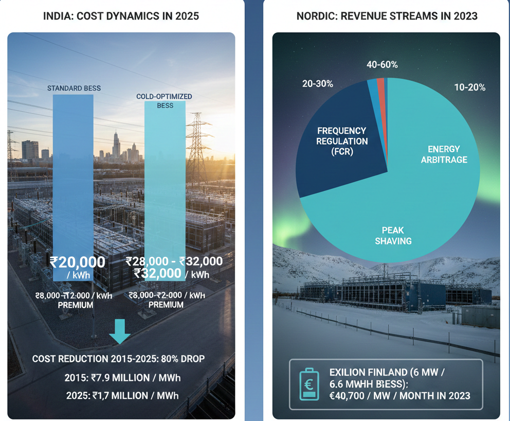
However, market saturation from rising BESS competition is driving prices down, emphasizing the importance of multi-service revenue stacking and grid-connection optimization.
India's Viability Gap Funding Scheme: Recognizing BESS's critical role in achieving India's 500 GW non-fossil target by 2030, the Indian government launched the Viability Gap Funding scheme in September 2023, providing capital subsidies capped at 40% of project costs (or a maximum of ₹46 lakh per MWh, whichever is lower). The scheme capacity has been increased from 4,000 MWh to 13,200 MWh within an approved budgetary allocation of ₹3,760 Crore.
Additional policy support includes an Interstate Transmission System (ISTS) charge waiver for co-located BESS—particularly significant for projects supplying power across state boundaries—extending 12 years from commissioning. These policy mechanisms have transformed BESS economics; between 2022 and May 2025, India auctioned approximately 12.8 GWh of BESS capacity, though only 219 MWh is currently operational, reflecting significant pipeline buildout.
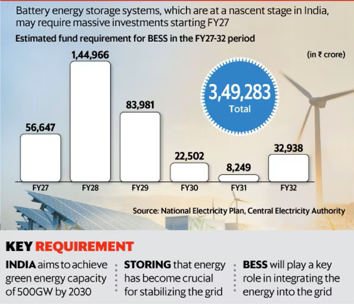
Payback Period Expectations: With VGF support reducing capital costs by 30-40%, standalone BESS systems in India achieve payback periods of 6-8 years through energy arbitrage and peak shaving services. In Nordic markets, payback periods range from 5-6 years for 2-hour systems positioned to capture frequency regulation revenues, though future FCR price declines may extend timelines.
Regulatory and Compliance Landscape
Nordic Region Standards: The Nordic countries benefit from mature regulatory frameworks coordinating BESS development through interconnected electricity markets. Finland's transition to 15-minute trading intervals beginning 2025 creates enhanced trading opportunities for BESS operators beyond historical hourly auctions. All Nordic BESS must comply with ENTSO-E (European Network of Transmission System Operators) grid codes requiring demonstration of cold-weather performance and frequency response capabilities.
Himalayan and Indian Compliance: India's National Framework for Promoting Energy Storage Systems, released in 2023, mandates compliance with UL 9540A, IEC 62933, and BIS standards. Projects must demonstrate capacity for handling thermal runaway events through training protocols and develop robust cybersecurity measures for grid-connected systems. The Central Electricity Authority projects that 236 GWh of BESS will be required by 2031-32 to integrate planned renewable capacities, with the National Storage Mission providing policy coordination across states.
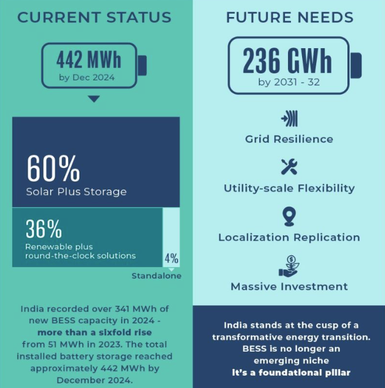
Nepal and Bhutan are accelerating renewable energy integration, with Nepal identifying over 2,800 potential pumped hydro energy storage sites with combined capacity exceeding 50 TWh that could be developed alongside distributed BESS networks. Bhutan, as the world's only carbon-negative country with 95%+ hydropower generation, is exploring BESS as a complementary technology to manage seasonal hydropower variability and enable solar/wind integration.
Operational Challenges: Managing Battery Degradation in Extreme Climates
Cold climates accelerate battery degradation through mechanisms distinct from temperate regions. Repeated charge-discharge cycles at low temperatures create lithium plating on negative electrodes, reducing reversibility and increasing internal resistance with each cycle. Seasonal temperature swings—common in both Nordic and Himalayan regions—impose additional thermal stress as components contract and expand.
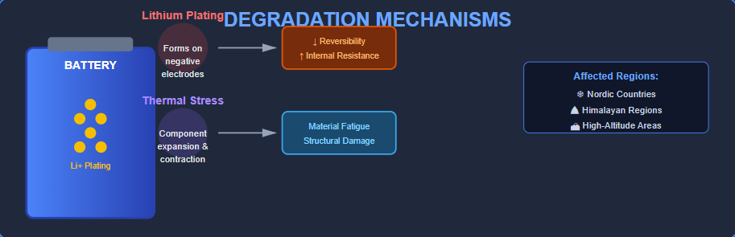
Charging Protocol Constraints: At -10°C, maximum safe charging rates drop to 0.1C (charging in 10 hours), while at -20°C, rates decline further to 0.05C (20-hour charging periods). These constraints significantly impact operational flexibility during grid disturbances requiring rapid battery response. Advanced BMS algorithms must dynamically adjust charging protocols based on real-time temperature forecasts and grid demand, requiring sophisticated energy management systems integrated with weather prediction models.
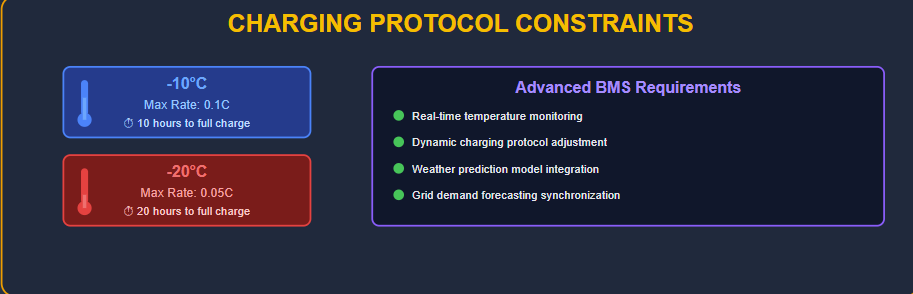
Maintenance Requirements: Industry best practices call for battery health inspections every six months in cold-climate deployments, including capacity testing, visual inspection for swelling or leaks, and insulation verification. Annual performance tests using electrochemical impedance spectroscopy enable early detection of degradation patterns that may lead to premature failure.
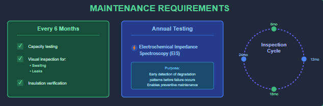
Market Outlook and Deployment Acceleration
The Nordic BESS market shows robust growth despite price pressures. Finland, Denmark, and Sweden combined could reach 5.1 GW capacity, with 900 MW operational, 1,370 MW under construction, and 2,800 MW in planning stages. The shift toward longer-duration BESS (4-hour and beyond), increased emphasis on energy trading through intraday markets, and co-location with renewable generation represent emerging deployment patterns designed to maximize value in saturated ancillary service markets.
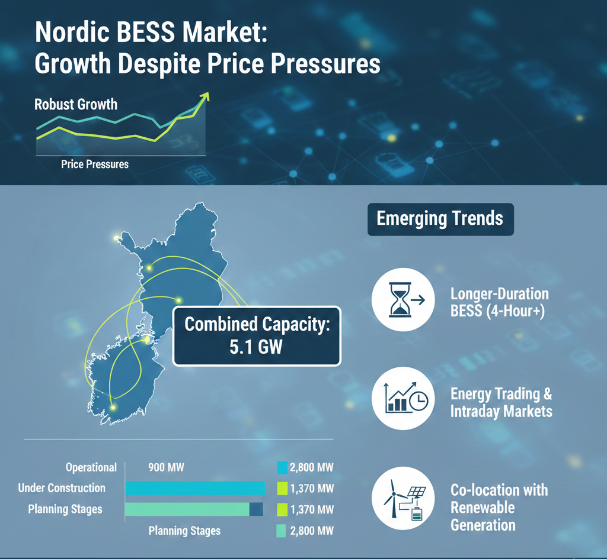
India's BESS sector shows similar momentum, with aggressive tendering activity accelerating project development. Over 43 GWh of capacity has been approved under VGF schemes, positioned to commence operations through 2025-2026. However, execution challenges including underbidding concerns, delays in power purchase agreements, and high financing costs demand careful attention to tender design and business model innovation.
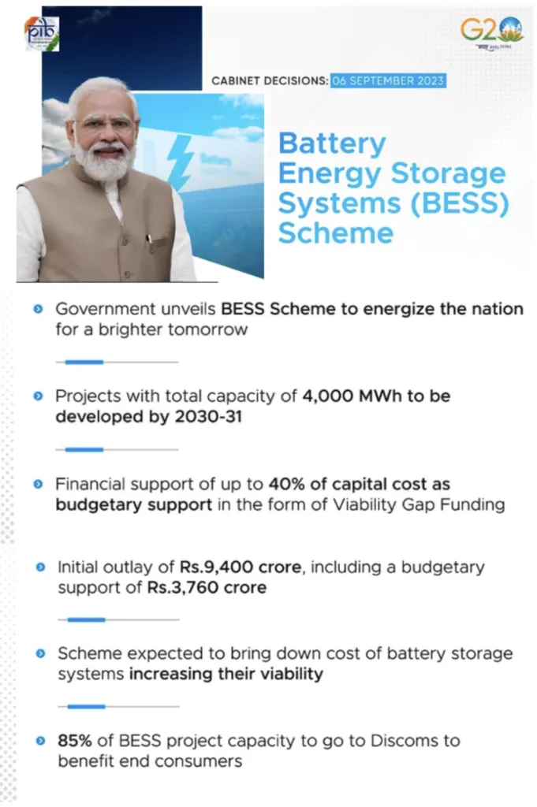
The Himalayan region's energy landscape is at an inflection point. Nepal's energy system modeling demonstrates technical and economic feasibility for achieving 100% renewable energy by 2050 using solar PV, hydropower, pumped hydro storage, and distributed BESS as complementary technologies. Bhutan's exploration of solar, wind, and biomass diversification beyond hydropower creates opportunities for BESS to address intermittency challenges in ways previously impossible in a hydro-dominant system.
Conclusion: Engineering Resilience in Extreme Environments
Cold-climate BESS deployment in Himalayan and Nordic regions represents a critical frontier for global energy storage technology. Advanced battery chemistries—particularly sodium-ion systems with negative-pressure cell sealing and self-healing networks—combined with liquid-cooled thermal management architectures enable reliable operation at -30 to -40°C even at extreme altitudes where conventional batteries would fail completely.
Organizations deploying BESS in these regions must prioritize systems demonstrating proven cold-weather performance, invest in robust thermal management regardless of initial cost premiums, ensure compliance with international standards while adapting designs to local altitude and climate conditions, and build operational capacity for specialized maintenance protocols these environments demand. The investment in engineering excellence for cold-climate BESS deployment will determine not only commercial success but the viability of renewable energy transitions in some of the world's most challenging and vital geographies.